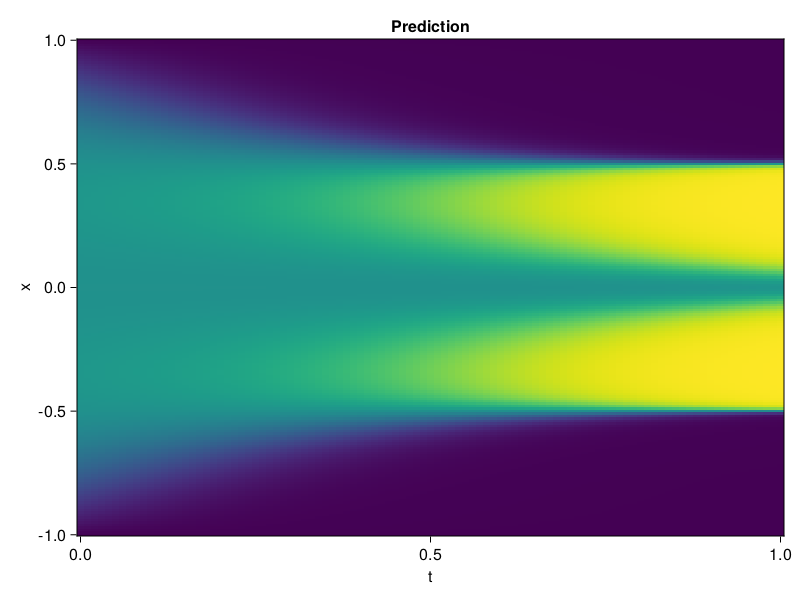

Allen-Cahn Equation with Sequential Training
In this tutorial we are going to solve the Allen-Cahn equation with periodic boundary condition from $t=0$ to $t=1$. The traning process is split into four stages, namely $t\in [0,0.25]$, $t\in [0.0,0.5]$, $t\in [0.0,0.75]$ and $t\in [0.0, 1.0]$.
using ModelingToolkit, IntervalSets
using Sophon
using Optimization, OptimizationOptimJL
@parameters t, x
@variables u(..)
Dₓ = Differential(x)
Dₓ² = Differential(x)^2
Dₜ = Differential(t)
eq = Dₜ(u(x, t)) - 0.0001 * Dₓ²(u(x, t)) + 5 * u(x,t) * (abs2(u(x,t)) - 1.0) ~ 0.0
domain = [x ∈ -1.0..1.0, t ∈ 0.0..0.25]
bcs = [u(x,0) ~ x^2 * cospi(x),
u(-1,t) ~ u(1,t)]
@named allen = PDESystem(eq, bcs, domain, [x, t], [u(x, t)])\[ \begin{align} - 0.0001 \frac{\mathrm{d}^{2}}{\mathrm{d}x^{2}} u\left( x, t \right) + 5 \left( -1.0 + \left|u\left( x, t \right)\right|^{2} \right) u\left( x, t \right) + \frac{\mathrm{d}}{\mathrm{d}t} u\left( x, t \right) =& 0.0 \end{align} \]
Then we define the neural net, the sampler, and the training strategy.
chain = FullyConnected(2, 1, tanh; hidden_dims=16, num_layers=4)
pinn = PINN(chain)
sampler = QuasiRandomSampler(500, (300, 100))
strategy = NonAdaptiveTraining(1, (50, 1))
prob = Sophon.discretize(allen, pinn, sampler, strategy)OptimizationProblem. In-place: true
u0: ComponentVector{Float64}(layer_1 = (weight = [1.2554725408554077 1.0398069620132446; -0.06842262297868729 -1.6619737148284912; … ; 0.3335781395435333 1.4979616403579712; 1.8422164916992188 -1.613013505935669], bias = [0.0; 0.0; … ; 0.0; 0.0;;]), layer_2 = (weight = [-0.23538754880428314 -0.40286779403686523 … -0.7067427635192871 0.6695329546928406; 0.32752442359924316 -0.532198965549469 … -0.19876205921173096 -0.5304328799247742; … ; -0.6066040396690369 0.38435080647468567 … -0.0773063600063324 0.4726984202861786; -0.6595330834388733 0.3372616171836853 … -0.020337680354714394 -0.2634802460670471], bias = [0.0; 0.0; … ; 0.0; 0.0;;]), layer_3 = (weight = [-0.3358924984931946 -0.3113270401954651 … -0.400437593460083 0.020128365606069565; 0.008448331616818905 0.3942427635192871 … 0.37699800729751587 0.016950001940131187; … ; 0.6756444573402405 0.03360551968216896 … -0.4515482783317566 -0.20627985894680023; -0.6700270771980286 0.6171618700027466 … -0.10946302115917206 -0.6305563449859619], bias = [0.0; 0.0; … ; 0.0; 0.0;;]), layer_4 = (weight = [0.5541473031044006 0.0909338966012001 … -0.6872957944869995 0.47458356618881226; 0.012139873579144478 0.13699907064437866 … -0.3939305543899536 0.35056886076927185; … ; -0.0859714075922966 -0.3495860993862152 … -0.007263156119734049 0.6288121342658997; -0.11832085996866226 -0.28440526127815247 … -0.2241518646478653 -0.6910786032676697], bias = [0.0; 0.0; … ; 0.0; 0.0;;]), layer_5 = (weight = [-0.6560129523277283 0.23121027648448944 … -0.21008780598640442 0.7004794478416443], bias = [0.0;;]))We solve the equation sequentially in time.
function train(allen, prob, sampler, strategy)
bfgs = BFGS()
res = Optimization.solve(prob, bfgs; maxiters=2000)
for tmax in [0.5, 0.75, 1.0]
allen.domain[2] = t ∈ 0.0..tmax
data = Sophon.sample(allen, sampler)
prob = remake(prob; u0=res.u, p=data)
res = Optimization.solve(prob, bfgs; maxiters=2000)
end
return res
end
res = train(allen, prob, sampler, strategy)u: ComponentVector{Float64}(layer_1 = (weight = [1.507206007587453 0.9294954807926231; 0.017776383342722236 -1.9137202800927058; … ; 0.6418672478142199 1.1051539291014578; 3.115014545501901 -0.906943830604871], bias = [-0.4915406026016459; -0.06426441146201911; … ; -1.0103599332888462; -0.5701560950783147;;]), layer_2 = (weight = [-0.15556983749271133 -0.8921239945514021 … -0.42931470704166746 1.1747932993886387; 0.09346469547827257 -1.055781799345338 … -0.19524585553215182 -0.6494679454554676; … ; -0.08512479716214527 0.10223725811236743 … 0.019481220003914577 0.5425228299879173; -0.6120451244934277 0.479410439131965 … 0.3475153043218974 -0.4681315060390987], bias = [-0.6236269955886996; 0.4083848073087003; … ; 0.5438304988751284; 0.16926871097071963;;]), layer_3 = (weight = [-0.0657058112444487 -0.5251321745446004 … -0.1918059080411554 0.23324133798150418; 0.09944593125174941 0.05890481733996243 … 0.5755941420437544 0.1516830978536332; … ; -0.047452175135366176 0.16863180565293057 … -1.2339572639179546 0.055405476926169574; -0.5712040760485922 0.7902808442669988 … -0.15467726163287043 -0.5251008734103049], bias = [-0.3651785066659851; -0.030138111230835037; … ; 0.014723552862845513; 0.0236666014667743;;]), layer_4 = (weight = [0.34355037021147933 0.2101010931503246 … -0.8195543785601302 0.640391241662723; 0.009049731694351424 0.08250702726917208 … -0.5010063118679262 0.4889517487529904; … ; -0.24695755228709138 -0.20182097103192925 … -0.32800051019691273 0.8096403228413696; -0.039948816400014395 -0.8768583425757008 … -0.35700393029273786 -0.6656178346880819], bias = [0.39165693466843937; 0.04340033643696442; … ; 0.21432257845053498; -0.12184813240033973;;]), layer_5 = (weight = [-0.31577411180059506 0.13550502687576801 … -0.06960754115585883 -0.2248447588811171], bias = [-0.3914590877190981;;]))Let's plot the result.
using CairoMakie
phi = pinn.phi
xs, ts = [infimum(d.domain):0.01:supremum(d.domain) for d in allen.domain]
axis = (xlabel="t", ylabel="x", title="Prediction")
u_pred = [sum(pinn.phi([x, t], res.u)) for x in xs, t in ts]
fig, ax, hm = heatmap(ts, xs, u_pred', axis=axis)